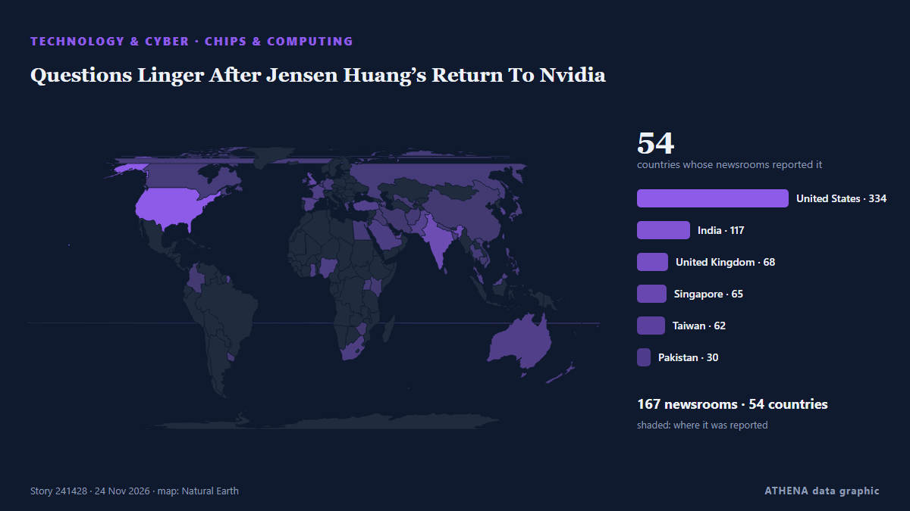

Τεχνολογία, ΤΝ & Κυβερνοασφάλεια
ΧορηγούμενοΠαρουσιάζεται από  Cybernetics and Artificial Intelligence Lab Welcome to the Cybernetics and Artificial Intelligence Laboratory, established at the Department of Business Administration of the National and Kapodistrian University of Athens. The lab is headed by Professor Dimitrios Thomakos. The lab aims to do research that can be published in top venues. Our research uses tools and methods of Artificial Intelligence, and lies in the following areas: - Forecasting - Decision making - Cyber security - Finance We are always looking forward to collaborating with exceptional students!
Cybernetics and Artificial Intelligence Lab Welcome to the Cybernetics and Artificial Intelligence Laboratory, established at the Department of Business Administration of the National and Kapodistrian University of Athens. The lab is headed by Professor Dimitrios Thomakos. The lab aims to do research that can be published in top venues. Our research uses tools and methods of Artificial Intelligence, and lies in the following areas: - Forecasting - Decision making - Cyber security - Finance We are always looking forward to collaborating with exceptional students!
Οι τίτλοι των ειδήσεων παρουσιάζονται στα αγγλικά, όπως δημοσιεύτηκαν.

Επεξεργαστές & υπολογιστικήQuestions Linger After Jensen Huang’s Return To Nvidia
The controversy surrounding Nvidia CEO Jensen Huang has grown from a personal dispute into a broader question about corporate governance, succession planning, and the shifting power structure of the… από DigiTimes Asia
| 11 Νοε | 83 |
|---|---|
| 12 Νοε | 74 |
| 13 Νοε | 87 |
| 14 Νοε | 40 |
| 15 Νοε | 45 |
| 16 Νοε | 114 |
| 17 Νοε | 103 |
| 18 Νοε | 104 |
| 19 Νοε | 104 |
| 20 Νοε | 66 |
| 21 Νοε | 30 |
| 22 Νοε | 46 |
| 23 Νοε | 65 |
| 24 Νοε | 16 |
OpenAI, Cisco Unveil Open Source Tool to Shield Unpatched Linux Systems
OpenAI and Cisco’s Shirudo uses AI-generated shields to block Linux exploits while patches are prepared, but it’s not yet production-ready. από SecurityWeek
Anthropic Expands Enterprise Safeguards for Detecting AI Misuse
EFS helps zero-retention customers spot Claude misuse spread across many requests while keeping conversation data in their own cloud. από SecurityWeek
Okta Links ShinyHunters-Associated Vishing Group to New INCEPTION Data Leak Site
A threat cluster previously assessed to be affiliated with the ShinyHunters extortion crew may have rebranded and continued operations under a new name called INCEPTION, according to Okta's Threat… από The Hacker News
Nvidia shares fall in premarket trading as Jensen Huang’s return sparks US political backlash – business live
Republicans and Democrats object over Trump’s role in Jensen Huang’s return as Nvidia CEO, following an affair with an alleged Chinese spy Have you downloaded Meta’s AI assistant Muse or do you plan… από The Guardian
Shenzhou-24 astronauts share preparation for spaceflight mission
Says he carries the 'hope of 250 million', mission is not a finish line but 'launchpad' for future endeavours. από Express Tribune
NATO believes Russia is preparing to launch a satellite equipped with nuclear weapons
Several German media outlets have reported on information held by NATO indicating that the Russians have developed a satellite that can be equipped with nuclear weapons. από Baltic News Network
GTA VI to supercharge Sony - just not in Japan
The global launch of “Grand Theft Auto VI” on Thursday is expected to provide a major… από BusinessWorld
Microsoft Azure flaw exploited to steal customers' API credentials
Microsoft is warning customers that a security vulnerability in Azure API Management (APIM) Classic tiers was exploited to steal stored API credentials, with Norwegian authorities linking the flaw to… από BleepingComputer
US Blacklists Megaspeed Cloud Company Linked to Nvidia Scandal
Suspected China spy linked to Nvidia's ex-boss left in 2025, Megaspeed says. από Ada Derana
Turkish Authorities Say Animal Spotted in Istanbul Woodland Was Not a Lion
The National Parks Directorate said specialist veterinarians and teams equipped with thermal imaging cameras were assisting the search, which was focused on a wooded area. από Euronews English
Anthropic mathematician claims to have solved 167-year-old math problem with Claude
An anthropic mathematician claims to have solved the Riemann hypothesis using Claude. από Tom's Hardware
Virginia, Oregon sue Musk's SpaceX over Grok AI's creation of child sexual abuse images and videos
Nov 23 - Virginia and Oregon are suing Elon Musk's SpaceX Super Intelligence Corp, alleging the company profited from a feature in its AI model Grok that produces child sexual abuse material and… από The Straits Times
UK defence secretary wants to find out what happened with Starlink and Starshield in Ukraine
UK Defence Secretary Wes Streeting said Starlink and Starshield disruptions in Ukraine require a clear explanation, noting they have dented allies' trust. από Ukrainska Pravda (English)
Spanish football league LaLiga suffers cyberattack exposing fans' personal data
Stolen information includes data from users registered with LaLiga's digital services and those of some clubs. από Anadolu Agency (English)
Lough Neagh book reveals warnings of wastewater treatment ‘disaster‘ due to NI Water funding cut
A new book about the plight of Lough Neagh reveals the anticipated impact of a lack of investment in wastewater infrastructure. από The Irish News (Belfast)
US Cyber Director Pick Signals Shift Toward Expertise
Trump named Kirsten Davies as Acting National Cyber Director, bringing greater industry experience to the role amid recent outages and rising geopolitical tensions. από Dark Reading
Reports: Russia may launch nuclear weapon into orbit as soon as next month
A nuclear detonation in space "could cause rapid and sudden loss or degradation of thousands of satellites." από Ars Technica
European-Japanese spacecraft reaches Mercury after eight-year journey, suffers glitch
Mercury, only slightly larger than Earth's Moon, is the least explored of the four planets in the inner solar system, with BepiColombo only the third spacecraft to visit the planet. από The Jerusalem Post
FBI reportedly investigating apparent hack of its criminal database
The National Crime Information Center database is used by federal and local law enforcement to share information. από BBC News
Tower Records Becomes Latest Japan Retailer Hit by Data Breach
Music retailer Tower Records Japan Inc. said customer information was leaked following unauthorized access, making it the nation’s latest retailer to disclose a data breach. από Insurance Journal
Countries agree to work toward ‘killer robots’ pact
GENEVA, Nov 20 - UN talks on rules for autonomous weapons headed into overtime on Friday with some nations including Russia dragging their feet and negotiators considering a non-binding deal on arms… από The Straits Times
Ethiopia and Rwanda Seek to Elevate Bilateral Partnership Through Practical Cooperation
Addis Ababa, November 23, 2026 (FMC) – Ethiopian Prime Minister Abiy Ahmed held talks with Rwandan Prime Minister Justin Nsengiyumva to exchange views on advancing practical collaboration and explore… από Fana Broadcasting Corporate
OpenRouter drops three AI providers after Dragos catches prompt theft
OpenRouter has removed three inference providers from its platform and stripped 125 endpoints of their Zero Data Retention (ZDR) status. από The Next Web
TikTok launches tool to help public figures detect deepfakes globally
The tool is being gradually rolled out, allowing politicians and popular TikTok accounts to report AI-generated content using their likeness without consent. από Free Malaysia Today
Italy Gives Tesla Green Light for Assisted Driving
The landmark approval makes Italy the first major EU market to allow the technology on its roads, with drivers still required to remain alert. από News of Bahrain
Many Etsy Sellers Close Up Shop Over Site’s New A.I. Policy
Numerous longtime users of the online marketplace have left the platform because they do not want their work training artificial intelligence. από New York Times Business
2 probes enter orbit around Mercury on Japan-Europe joint mission
Two probes, part of the BepiColombo joint Japan-Europe mission, have entered orbit around Mercury, the European Space Agency said Sun. από Mainichi (English)
Landmine blast kills 5 children in northwest Syria: state media
A land mine explosion in the Idlib province of northwest Syria killed four children and injured two others. από Arab News
OpenAI chief scientist urges industry limits on AI development
Jakub Pachocki warned that AI could accelerate advances in its own development as soon as 2027. από The Straits Times
Nvidia's accounting is focus of US SEC investigation, sources say
The U.S. Securities and Exchange Commission is probing Nvidia's accounting practices, said two people briefed on the matter, adding to the legal woes facing the scandal-hit chip giant. από The Korea Times
Microsoft, Google turn to Intel EMIB as CSPs seek alternatives to TSMC CoWoS
Intel and Microsoft jointly announced on November 18, US time, that Microsoft will adopt Intel Foundry's embedded multi-die interconnect bridge (EMIB) advanced packaging technology for its custom… από DigiTimes Asia
Exclusive-Like SpaceX, Anthropic ran an unusual IPO process, chafing some bankers
Bankers criticised SpaceX's tight control over its IPO process, which limited advisers' access to information. από Express Tribune
Honda to launch new hybrid Avancier SUV in Japan after debut in Thailand
The Avancier will not be sold in the US, Honda’s biggest market, but will occupy the top spot in its Asia-Pacific SUV lineup, above the popular CR-V. από Free Malaysia Today
Influencer deepfakes used to stoke Canada-US tensions
Content creators say their identities are being stolen to create division. από The Straits Times